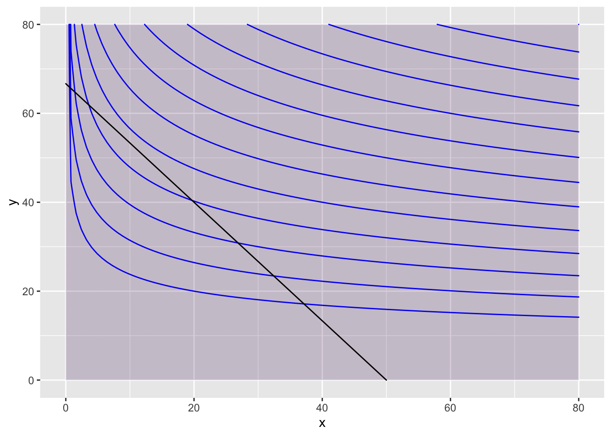
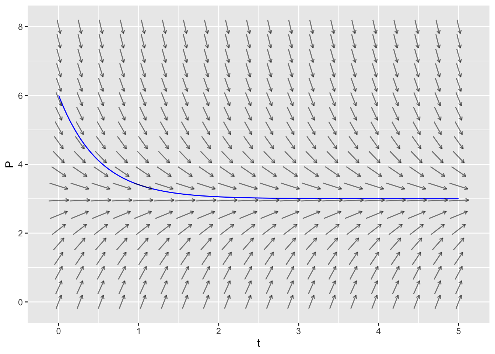
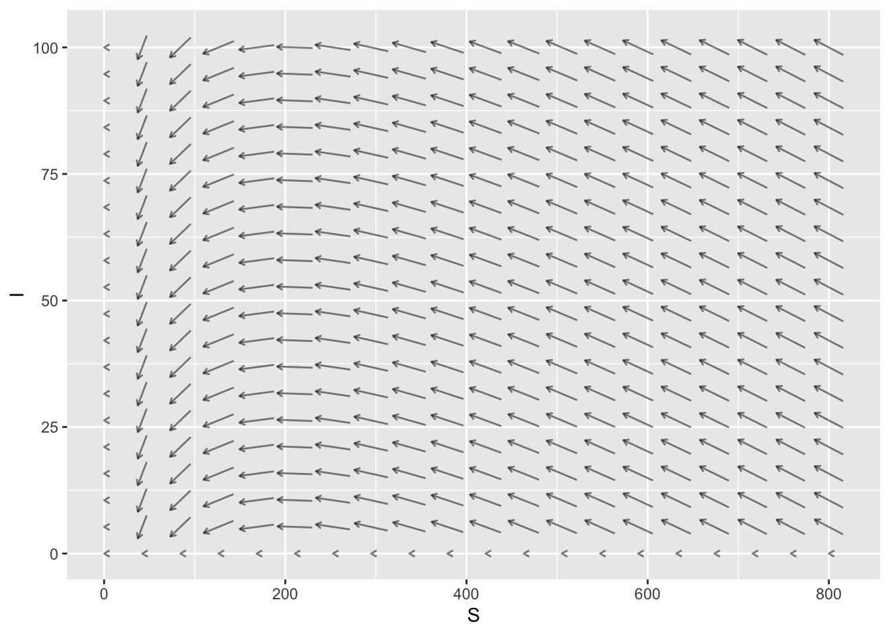

knitr::opts_chunk$set(echo = TRUE)
suppressPackageStartupMessages(library(mosaic))
suppressPackageStartupMessages(library(mosaicCore))
suppressPackageStartupMessages(library(mosaicCalc))RStudio Quick Reference
Loading Mosaic, MosaicCore and MosaicCalc Packages
Run the following code block to load the mosaic, mosaicCore and mosaicCalc libraries
Troubleshooting
Without fail, you will run into problems. Sometimes RStudio will give you helpful error messages, but sometimes they are obtuse. Here’s a list of some common errors and what might be wrong:
Nothing ran, all I got was a plus sign… You probably forgot some parentheses. Try the following:
- Enter a parenthesis on that line to see if this closes it out.
- Press the Escape key to get to a new line.
Unexpected symbol in… You may have forgotten a multiplication sign or otherwise gave RStudio a symbol it cannot parse. Check your line of code again to see if you have all your symbols.
Object not found… You may not have defined that variable (or function) yet. Check your environment tab to see if it has the object you’re looking for (or if you’ve called it something different than you remember!). You also may be trying to use something from a data set that you have not included as a parameter. See if you need to add in the parameter
data=....Could not find function… RStudio doesn’t know what function you’re using. Check your capitalization and that you have the right packages installed.
… number of items to replace is not a multiple of replacement length … Your input variable doesn’t match the name variable you used in the output when you called
makeFun. Maybe you usedxon one side of the tilde~andton the other side?Argument “name” is missing, with no default… You’re probably trying to use
makeFunwithout loading themosaicpackage, or to plot a vector field without themosaicCalc package. See the “Loading Mosaic, MosaicCore and MosaicCalc Packages” section at the top of this page for how to fix this.I can’t find my data! You may have fetched it but did not give it a name. Go back to your fetch command and make sure you have assigned it a variable.
Functions and Data
Common Functions
| function | R command | comments |
|---|---|---|
| \(x^2\) | x^2 |
|
| \(4x^2 -7x + 3\) | 4*x^2 - 7*x + 3 |
You must always include the * when you multiply |
| \(\sqrt{x}\) | sqrt(x) or x^(1/2) |
|
| \(\sqrt[3]{x}\) | x^(1/3) |
|
| \(\sin(x)\) | sin(x) |
|
| \(\cos(x)\) | cos(x) |
|
| \(e^x\) | exp(x) |
exp is a function (like sin and cos), so you do NOT need a ^ |
| \(\mbox{ln}(x)\) | log(x) |
RStudio uses the natural logarithm as the default |
| \(\log(x) = \log_{10}(x)\) | log10(x) |
Humans default to “log base 10.” RStudio does not! |
| \(\log_{b}(x)\) | log(x,b) |
You can use any number \(b\) as the base for your logarithm |
Defining Your Own Function
The makeFun command is part of the mosaic package.
| desired function | R command | comments |
|---|---|---|
| \(f(x) = x^2 +5x + 6\) | f = makeFun(x^2 + 5*x + 6 ~ x) |
remember your * signs! |
| \(g(x) = \sin^2(x) - \frac{1}{2}\) | g = makeFun(sin(x)^2 - 1/2 ~ x) |
note the placement of ^2 |
| \(P(t) = 5 e^{.25 t}\) | P = makeFun(5 * exp(0.25 * t) ~ t) |
exp does not need a ^ |
| \(Q(t) = 12.38 (1.041)^t\) | Q = makeFun(12.38 * (1.041)^t ~ t) |
Notes:
- The general syntax is
makeFun( OUTPUT ~ INPUT )where the OUTPUT is a function of the INPUT. - You must assign this to a variable so that you can use it later. So your command must start with
f = ...so that you get a function namedf. - The variable (
xort, etc) that appears in the OUTPUT must match the INPUT variable that appears after the tilde~. The the commandmakeFun(x^2 ~ t)won’t work because thex^2is not a function oft.
Creating Lists of Data
Use c() to “combine” some values into a list. Assign the list to a variable so that you can use it later.
my_primes = c(2, 3, 5, 7, 11, 13, 17, 19, 23, 29)
my_primes [1] 2 3 5 7 11 13 17 19 23 29my_data = c(5, -2, 7, 3, -10, 15)
my_data[1] 5 -2 7 3 -10 15Use seq() to generate a sequential list of values in a specified range. The optional third parameter tells RStudio to increment by that value instead of incrementing by 1.
my_seq1 = seq(1,10)
my_seq1 [1] 1 2 3 4 5 6 7 8 9 10my_seq2 = seq(5, 6, 0.25)
my_seq2[1] 5.00 5.25 5.50 5.75 6.00my_seq3 = seq(5, 6, 0.1)
my_seq3 [1] 5.0 5.1 5.2 5.3 5.4 5.5 5.6 5.7 5.8 5.9 6.0Plotting Data
Use gf_point to plot a list of \(y\)-axis data versus a list of \(x\)-axis data. Separate these lists with a tilde ~.
X = seq(1:5)
Y = X^2
gf_point(Y ~ X)The prefix gf in the name gf_point is short for “graph formula.” You can specify labels for the horizontal axis and the vertical axis using xlab and ylab.
x_data = c(2,3,5,8,13)
y_data = c(2,4,8,4,2)
gf_point(y_data ~ x_data, xlab='day', ylab='rainfall (mm)')Plotting Functions
Use slice_plot to plot a function.
- As with
gf_point, we use a tilde~to separate the output variable (the function) from the input variable. - The required
domainargument specifies the domain for the plot.
slice_plot(sin(x) ~ x, domain(x=0:2*pi), color='blue')
You can add a label to the plot, or to the axes. You do this by
slice_plot(sin(x) ~ x, domain(x=0:2*pi), color='blue') +
ylab('sin(x)') + xlab('x values') + labs(title="y=sin(x)")We can layer one plot on top of another by using a pipe %>%.
- You only need to specify the
domainfor the first plot because the second one is added to the first. - It’s helpful to change the color for subsequent plots. Use the argument
color="red"using any color name you like (RStudio knows a lot of colors!)
slice_plot(2 * sin(x) ~ x, domain(x=0:2*pi)) %>%
slice_plot(cos(3*x) ~ x, color='green')- The
%>%symbol is pronounced “pipe.” The pipe must appear at the end of the line (not at the start of the next line). - A command involving a pipe is called a “pipeline.” Think of the calculation as flowing from one command to the next, left to right.
- If you have specified the
domain()at an early stage in the pipeline, you don’t need to specify it again in the later plotting commands. But, if you want, feel free to set the domain explicitly. This is helpful if you want the graphics domain to be different for the different layers. - Pro Tip: write a pipeline with one line for each stage, with the pipe symbol at the end of each stage.
The slice_plot command takes a whole variety of parameters, here are a few useful ones:
domain: sets the range of your \(x\)-axis. Example:domain(x=1:4).color: sets the color of the function you plot. RStudio will recognize most basic colors, which you will pass as strings. Example:color="red".
Let’s try some of this out. I broke the third line so it would all fit, you don’t need to!
f=makeFun(x^3+3~x)
g=makeFun(3*x^2~x)
slice_plot(f(x)~x, domain(x=1:4), color="blue") %>%
slice_plot(g(x)~x, col="red") + xlab("time") + ylab("red=velocity, blue=position")RStudio is a little weird about plots in the RMarkdown in that you might get multiples if you’re adding plots together. If you want the chunk to hold all plots until the end, add fig.show='hold' into the script braces at the top of the chunk.
Plotting Data and Functions
We can also combine plots of data and functions using the pipe comment >%>.
time_data = seq(0,50, 10)
pop_data = c(6.82, 9.63, 14.3, 20.48, 28.94, 42.25)
P = makeFun( 6.82 * (1.037)^t ~ t)
gf_point(pop_data ~ time_data, xlab='years since 1950', ylab='population (millions)') %>%
slice_plot(P(t) ~ t, domain(t=0:50), color='orange')Plotting Surfaces in 3D
We plot functions \(z = f(x,y)\) using the contour_plot command. We specify the independent variables with the syntax ~ x&y.
f = makeFun(x^2 - y^2 ~ x&y)
contour_plot(f(x,y) ~ x&y, domain(x=-2:2, y=-2:2))By default, RStudio labels every other countour. We can change this using the skip parameter. The default value of skip is 1. If we want to label every contour, we set skip=0.
f = makeFun(x^2 - y^2 ~ x&y)
contour_plot(f(x,y) ~ x&y, domain(x=-2:2, y=-2:2), skip=0)
You can add more contours using the contours_at parameter, and turn off the shading with the filled parameter.
contour_plot(f(x,y) ~ x&y, domain(x=-2:2, y=-2:2), contours_at = seq(-3 ,3, .5))You can change the plot range using domain.
contour_plot(f(x,y) ~ x&y, domain(x=-20:20, y=-20:20))You can create a 3D plot interactive_plot.
interactive_plot(f(x,y) ~ x&y, domain(x=-20:20, y=-20:20))Loading required namespace: plotlyDifferentiation
Estimating the Derivative
We can estimate the derivative of \(f'(x)\) by using the average rate of change \[ f'(x) \approx\frac{f(x+\alpha)-f(x)}{\alpha} \] for some small number \(\alpha > 0\). Smaller and smaller \(\alpha\)’s lead to better and better approximations.
So we can estimate the derivative by using smaller and smaller \(\alpha\) values until our estimates stabilize. Here is an example that estimates \(f'(4)\) for the function \(f(x) = x^2 + 10*\sin(x)\).
f=makeFun(x^2+10*sin(x)~x)
alpha=c(1, 0.1, 0.01, 0.001, 0.0001, 0.00001, 0.000001, 0.0000001)
d=(f(4+alpha)-f(4))/alpha
d[1] 6.978782 1.952538 1.511513 1.468349 1.464042 1.463612 1.463569 1.463564The estimates stabilize to the value \(1.46356\). So our estimate is \(f'(4) \approx 1.46456\)
Estimating the Partial Derivative
We can use the same method to estimate the partial derivates of \(g(x,y)\). We have \[ \frac{\partial g}{\partial x} \approx\frac{g(x+\alpha,y)-f(x,y)}{\alpha} \quad \mbox{and} \quad \frac{\partial g}{\partial y} \approx\frac{g(x,y+\alpha)-f(x,y)}{\alpha} \] Let’s estimate the partial derivatives of \(g(x,y) = e^{x \sin(y)}\) at the point \((2, 7)\). First, let’s estimate \(g_x(2,7) = \left. \frac{\partial g}{\partial x} \right|_{(2,7)}\). The code is very similar to the code we used for a single variable function.
g=makeFun(exp(x*sin(y))~x&y)
alpha=c(1, 0.1, 0.01, 0.001, 0.0001, 0.00001, 0.000001, 0.0000001)
d=(g(2+alpha,7)-g(2,7))/alpha
d[1] 3.456634 2.526691 2.452648 2.445403 2.444680 2.444608 2.444601 2.444600We conclude that \(g_x(2,7) \approx 2.445.\)
Now let’s estimate \(g_y(2,7) = \left. \frac{\partial g}{\partial y} \right|_{(2,7)}\). All we need to do is move alpha into the \(y\)-variable.
g=makeFun(exp(x*sin(y))~x&y)
alpha=c(1, 0.1, 0.01, 0.001, 0.0001, 0.00001, 0.000001, 0.0000001)
d=(g(2,7+alpha)-g(2,7))/alpha
d[1] 3.512524 5.761618 5.628032 5.612215 5.610611 5.610450 5.610434 5.610433We conclude that \(g_y(2,7) \approx 5.610.\)
Classifying 2D Critical Points
Once you’ve identified a critical point (where both \(f_x = 0\) and \(f_y=0\)), you need to determine whether it is a local maximum, a local minimum, or a saddle point.
For example, here is code to check the critical point \((2,-1)\) of the function \(f(x,y)=x^2 + 2y^4 + 4xy\). We compare the value of the function at \((2,-1)\) with the values of the function at points on a small circle around the critical point.
f = makeFun(x^2 + 2*y^4 + 4*x*y ~ x&y)
a=2
b=-1
r = 0.1
theta = seq(0,2*pi,pi/10)
f(a,b) - f(a+r*cos(theta), b+r*sin(theta)) [1] -0.010000000 -0.032025526 -0.065424470 -0.096866673 -0.114533357
[6] -0.112200000 -0.091021947 -0.058824413 -0.027382209 -0.008514116
[11] -0.010000000 -0.032497662 -0.068673667 -0.105338809 -0.128297176
[16] -0.128200000 -0.104785766 -0.067296549 -0.030631406 -0.008986252
[21] -0.010000000All of these values are negative, which means that \((2,-1)\) is a local minimum.
In general: - If all values are positive, then \((a,b)\) is a local maximum of \(f(x,y)\). - If all values are negative, then \((a,b)\) is a local minimum of \(f(x,y)\). - If the values are both positive and negative, then \((a,b)\) is a saddle point of \(f(x,y)\).
Gradient Search
Here is code that will use gradient search to find the maximum of the function \[ f(x,y) = - x^4 - x^3 + 10 x y + 2y - 8 y^2 \] whose partial derivatives are \[ \frac{\partial f}{\partial x} = -4 x^3 -3 x^2 + 10 y \quad \mbox{and} \quad \frac{\partial f}{\partial x} = 10 x + 2 - 16 y \]
First, you define the partial derivatives and then choose your starting point (newx, newy). In this case, we start at (1,1).
partialx=makeFun( -4*x^3 -3*x^2 + 10*y~x&y)
partialy=makeFun(10*x + 2 - 16*y~x&y)
newx = 1
newy = 1Next, you repeatedly run the following code block, which updates the current point by moving 0.1 times the gradient vector. This is equivilant to taking a small step in the uphill direction.
Repeatedly to run this code block until the partial derivatives are essentially zero (at least two zeros after the decimal point). Congrats! You have found your local maximum.
slopex=partialx(newx, newy)
slopey=partialy(newx, newy)
newx = newx + 0.1*slopex
newy = newy + 0.1*slopey
# print new partial derivatives
c(partialx(newx, newy), partialy(newx, newy))
# print new point
c(newx, newy)Repeatedly running this code block will take you to the point (1.04,0.77). But note that starting at another initial point might take you to a different local maximum.
If you want to find a local minimum, then you should multiply the partials by -0.1 instead. This is equivalent to taking a small step downhill. Try this on the function \(f(x,y) = x^2 + 2 x y + 3 x + 4 y + 5 y^2\).
Constrained Optimization
Suppose that we want to find the maximum of the production function \(P(x,y)=3000x^{0.2}y^{0.8}\) given the constraint \(Q(x,y)= 4x + 3y = 200\).
We want to make a contour plot of \(P(x,y)\) and then add the constraint. The maximum value is achieved where the constraint \(Q(x,y)=300\) is tangent to the contour curve of \(P(x,y)\).
P = makeFun( x^(0.2) * y^(0.8) ~ x&y)
Q = makeFun( 4*x + 3*y ~ x&y)
contour_plot(P(x,y)~x&y, domain(x=0:80, y=0:80),
contours_at=seq(20,80,5), skip=0) |>
contour_plot(Q(x,y) ~ x & y, contour_color="black",
contours_at=c(200), label_placement=.25)Scale for colour is already present.
Adding another scale for colour, which will replace the existing scale.
Scale for fill is already present.
Adding another scale for fill, which will replace the existing scale.
In this case, the optimal value of \(38\) is achieved at approximately \((10, 55)\). Let’s make another plot to get a better estimate.
contour_plot(P(x,y)~x&y, domain(x=0:40, y=20:60),
contours_at=seq(20,50,2), skip=0) |>
contour_plot(Q(x,y) ~ x & y, contour_color="black",
contours_at=c(200), label_placement=.25)Scale for colour is already present.
Adding another scale for colour, which will replace the existing scale.
Scale for fill is already present.
Adding another scale for fill, which will replace the existing scale.On this zoomed in plot, we can refine our estimate a bit. The maximum \(f(10,53)=38\) is achieved at \(x=10\) and \(y=53\).
Now, if I want to estimate the Lagrange multiplier \(\lambda\), I would change my constraint a little bit (say to \(210\)) and then look at the change in the optimal value.
contour_plot(P(x,y)~x&y, domain(x=0:40, y=20:60),
contours_at=seq(20,50,2), skip=0) |>
contour_plot(Q(x,y) ~ x & y, contour_color="black",
contours_at=c(200,210), skip=0,
label_placement=.25)Scale for colour is already present.
Adding another scale for colour, which will replace the existing scale.
Scale for fill is already present.
Adding another scale for fill, which will replace the existing scale.We have \[ \lambda = \frac{\triangle \mbox{optimal value}}{\triangle \mbox{constraint}} = \frac{40 - 38}{210-200} = \frac{2}{10} = 0.2. \]
Integration
Estimating the Definite Integral
The define integral \(\int_{a}^b f(x) dx\) is the signed area between the curve \(y=f(x)\) and the \(x\)-axis. We approximate this area by partitioning the interval \([a,b]\) into smaller intervals of width \(\triangle x\) and then summing the areas \(f(x) \triangle x\) of the corresponding rectangles.
Here is code for a Right Endpoint approximation for the function \(f(x) = x + \sin(x^2)\) over the interval \([5,10]\). The code splits this interval into 100 subintervals. You can get a better approximation by increasing the denominator of base=(b-a)/100 to a much larger number, for example: base=(b-a)/1000000.
f=makeFun(x + sin(x^2)~x)
a=5
b=10
num=100
base=(b-a)/num
points=seq(from=a+base, to=b, by=base)
heights=f(points)
areas=base*heights
sum(areas)[1] 37.67298And here is code for a Left Endpoint approximation of the same function.
f=makeFun(x + sin(x^2)~x)
a=5
b=10
num=100
base=(b-a)/num
points=seq(from=a, to=b-base, by=base)
heights=f(points)
areas=base*heights
sum(areas)[1] 37.44168Differential Equations
Euler’s Method
Euler’s Method repeatedly uses Local Linear Approximation to find an approximate solution to a differential equation. Here is code that uses Euler’s Method to find an approximate solution for the following problem:
- Differential equation \(\displaystyle{\frac{dx}{dt} = 3x - x^2}\)
- Initial point \(t_0=2\) and \(x_0= 5\)
- End time \(T=9\)
- Step size \(\triangle t = 0.01\)
# derivative, initial conditions and setup
dxdt = makeFun(3*x - x^2 ~ x)
tstart = 2
xstart = 5
tend = 9
dt = 0.01
num = (tend - tstart)/dt
# Euler's Method code
t = tstart
x = xstart
tlist = t
xlist = x
for (i in 1:num) {
x = x + dt * dxdt(x)
t = t + dt
tlist = c(tlist, t)
xlist = c(xlist, x)
}
# print the ending point
c(tail(tlist,1), tail(xlist,1))[1] 9 3# plot the approximate function
gf_point(xlist ~ tlist)
Slope Fields
The mosaicCalc package has a vectorfield_plot function that we use to create a slope field. So we need to make sure that this package has been loaded into RStudio.
suppressPackageStartupMessages(library(mosaicCalc))Here is the code to create the slope field for \(\displaystyle{\frac{dP}{dt} = 5 - 2 P}\)
vectorfield_plot(t ~ 1,
P ~ 6 - 2 * P,
domain(t=-8:8, P=-8:8))
Creating a Trajectory in RStudio
The mosaicCalc package also has a traj_plot function that plots a solution curve to a differential equation through a given initial point.
Here is the code to plot the trajectory starting at \(P(0)=6\) for the differential equation \(\displaystyle{\frac{dP}{dt} = 6 - 2 P}\). In the code below, the nt parameter indicated the number of “tick marks” to use along the trajectory.
dyn = makeODE( dP ~ 6 - 2 * P )
soln = integrateODE(dyn, domain(t=0:5), P=6)
traj_plot(P(t) ~ t, soln, nt=5) 
In fact, we can get fancier by making a single plot that has two trajectories (one for \(P(0)=6\) and one for \(P(0)=2\)) along with the vector field.
dyn = makeODE( dP ~ 6 - 2 * P )
soln1 = integrateODE(dyn, domain(t=0:5), P=6)
soln2 = integrateODE(dyn, domain(t=0:5), P=2)
traj_plot(P(t) ~ t, soln1, color="blue", nt=5) %>%
traj_plot(P(t) ~ t, soln2, color="magenta", nt=5) %>%
vectorfield_plot(t ~ 1, P ~ 6 - 2 * P, domain(t=0:5, P=0:8))
SIR Model
The mosaicCalc package has a vectorfield_plot function that we use to create a slope field, and a traj_plot function that we use to plot a trajectory. So we need to make sure that this package has been loaded into RStudio.
suppressPackageStartupMessages(library(mosaicCalc))Here is some example code that plots an SIR slope field where
- The infection rate is \(a=0.001\)
- The removal rate is \(b=0.2\)
- \(0 \leq S \leq 800\)
- \(0 \leq I \leq 100\)
The horizontal axis is the susceptible population and the vertical axis is the infected population.
vectorfield_plot(S ~ - 0.001*S*I,
I ~ 0.001*S*I -0.2*I,
domain(S=0:800, I=0:100),
transform=function(L) L^0.01)
Here is some example code that plots a single SIR trajectory for this same model. Here are the additional inputs:
domain(t=0:80)means that the trajectory runs for \(0 \leq t \leq 80\).S=800means that the initial susceptible population is 800.I=5means that the initial infected population is 5.nt=20means that 20 tick marks will be added to the trajectory, showing the time that the point \((S,I)\) occurs.
SIRdyn = makeODE(dS ~ - 0.001*S*I,
dI ~ 0.001*S*I -0.2*I )
Soln = integrateODE(SIRdyn, domain(t=0:80), S=800, I=5)
traj_plot(I(t) ~ S(t), Soln, nt=20)Solution containing functions S(t), I(t).